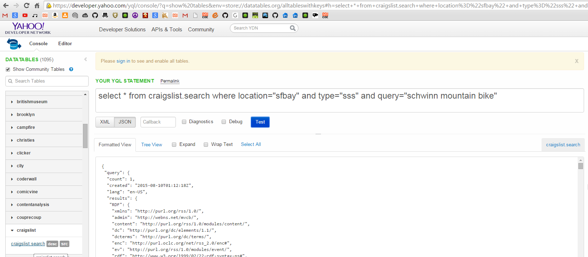
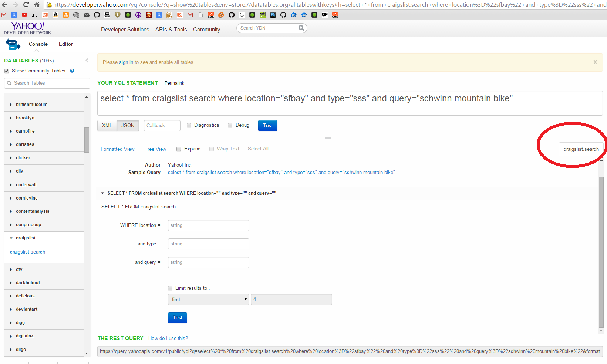
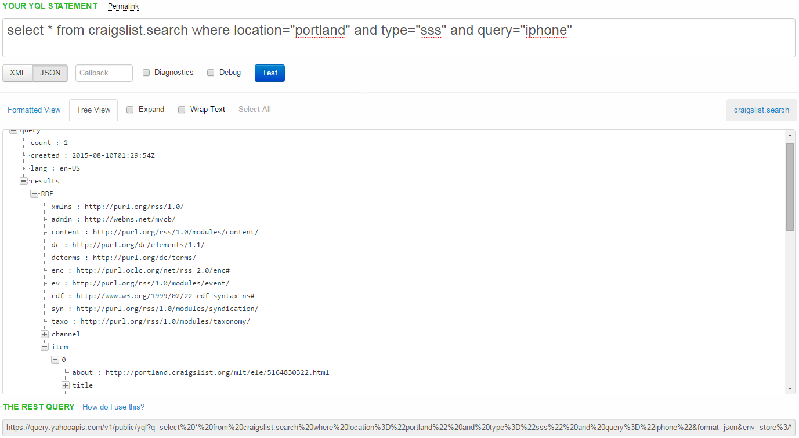

Let's Query for Craigslist
This page of the guide will show you an example of how to make a query and retrieve a response from
the Craigslist table. Let's pretend you are a creating a web application that allows user to search on the web for items that are for sale
on Craigslist. Instead of redirecting users to Craigslist and making users learn how to use Craigslist (if they don't know how to already), you
can simply make a query in YQL that will look up the Craigslist table, perform the search, retrieve the response as JSON/XML data, and display
it on your application however you choose. Let's begin!
First thing you need to do is click the show community tables check-box to see the entire list of tables. Go down
to where you see Craigslist and click on the craigslist.search link. see the picture below.

As you can see, an example query appears regarding Schwinn bikes from San Francisco. As I mentioned before,
the example query appears to show users what conditions are needed in this table to correctly query for information. If you do not feel comfortable using the
SQL like query, you can click on the craigslist.search tab on the right, and it will display in an HTML form on what information is needed ot make
the query for this table.

Let's continue our example with querying for any sort of iphones in the portland area. Type this into
the Query text field and press the blue Test button:
select * from craigslist.search where location="portland" and type="sss" and query="iphone"
As you can see, a response appears in the response box. Click on the JSON button in order to parse this information as a JSON object.
As mentioned previously, this response may be difficult to parse as you can't really tell where the brackets open and close. Click on Tree View
for a much clearer view. As you can see below, the data you most likely want with this search are items that are for sale that are iphones.
That is: query.results.RDF.item and depending on your application, you can display whatever type of information in each item you'd like.
If this were to mirror a craigslist app, mostt likely the description and a picture of the item would suffice.

Assuming this is how you'd like your craigslist-like app to function, you can now go to the bottom of the page and
retrieve this information with the REST QUERY link. This part here is where you as a developer must know how to splice up the URL that was given to you
and be able to interact with users of your applications to enter in data necessary for the query.